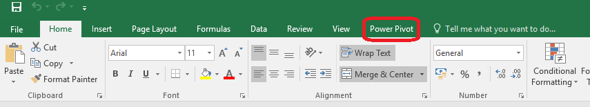

<<<<<<< HEAD
Objectives
Excel provides powerful tools for distilling a complex data set into meaningful information: Pivot Tables and PowerPivot Tables
This lab was created using material from Data Visualisation with Advanced Excel by PwC available on www.coursera.org
=======Objectives
QlikView is a user driven business intelligence tool that helps people make decisions based on a variety of insights drawn from data, people and the environment.
Business discovery helps users ask and answer their own questions and follow their own paths to insight. It also enables teams to reach decisions collaboratively.
These labs will introduce you to QlikView, teaching you how to create dashboards with interactive components.
>>>>>>> a2c83817cc3dade05384524e390f933debdba7efPivotTables
PivotTables allow you to create custom summaries and charts of key information in the data. To apply pivottables you need a data set with column labels in the first row.
The data set Accounting Professionals provides the results of a survey of 27 employees in a tax division of a Fortune 100 company.
Select any cell in the data set and choose Insert PivotTable from the Insert tab and follow the steps of the wizard.
Excel creates a new worksheet with a pivotTable as shown below:

You should first decide what types of tables you wish to create. For example in the accounting data set, suppose you want to count the average number of years of service for males and females with and without a graduate degree. If you drag the variable Gender from the field list to the row labels area, the variable graduate degree? into the column labels area and the variable years of service into the values area, then you have created the PivotTable.

However, the sum of years is probably not what you would want.
In the Analyze tab for Pivot Table Tools in the menu bar, click on the Active Field group and choose Field Settings. You will be able to change the summarisation method in the PivotTable in the dialog. Selecting the Average results in the PivotTable shown below. We see that the average number of years of service is not much different for holders of graduate degrees, but that females have much fewer years of service than males.

The beauty of pivotTables is that if you wish to change the analysis, you can simply uncheck the boxes in the field list or drag the variable names to different field areas. You may easily add multiple variables in the fields to create different views of the data.
Create PivotTables to find the average number of years of undergraduate study for each age group with and whithout a CPA and the number of employees in each age group with and without a CPA in the Excel file Accounting Professionals.
Create a PivotTable showing the count of the number of employees by age group.

PivotTables also provide an easy method of constructing cross-tabulations for categorical data. Extend the one above, drag the field Graduate Degree? into the column label box in the field list. This PivotTable is a cross-tabulation of the number of employees in each age group who do or do not posses a graduate degree.

Open the file Bicycle Pivot. Create a PivotTable to determine the total revenue for material groups in each sales organisaiton.
Experiment with adding filters to the pivotTable, such as Distribution Channel.
You can also drill down into the data by right clicking on the category Mountain bike, choose Expand/Collapse and then Expand, then choose the detail you want to see, in this case Material. Remove the drill down by removing the Material field in the field list for rows.
Try restricting to the first quarter of 2007. To do this we add the field Date to the rows section, and then right click on one of the dates displayed, choose Group, and add Quarters, and Years to the groups.Then move the Years and Date fields that appear in the rows section to the filter section. Then click on the dropdown box for Years and tick 2007, click on the dropdown box for Date and choose the first quarter.

Introcution to QlikView
QlikView applications have .qvw extensions.
Download the movie database. Open QlikView on your laptop by finding it in your programs menu.
From the file menu choose open, navigate to the the folder where you saved the QlikView movie application.
Read the intro page and then click get started. This brings you to the next tab called How QlikView works. Practice selecting a fruit and seeing how the displayed data is presented.
Now explore the traditional OLAP tab. click the magnifying glass by the word "Director", and then type "Wo". A search box displays with a list that includes Woody Allen.
Click Woody Allen. A list containing Woody Allen's films displays.
With traditional OLAP the navigation path to analyse data is predefined. Usually it is a top down hierarchy.
Next click Clear and then go to the QlikView Model tab.
Click the magnifying glass in the Title field. Type "Bananas", and then select it.
You can see Bananas shows in green, this is the data you have choosen, to the left you can see Woody Allen's name in white this means that data is associated to Bananas and the other directors in the list are grey and thus not associated. To the right you can see a list of actors in white, all of whom are in the film Bananas.
Make sure you still have Bananas selected in the title box, next click on the actor Woody Allen. You can then unclick the Bananas selction and it will show you all the films and associated directors that woody allen has been an actor. You can see he has played in movies by two other directors.
In the directors list click on Woody Allen, you can then see the 17 movies he acted and directed.
Searching
QlikView searches for field values matching a text string that you type. When you start typing, by default it is surrounded by two * wildcard characters. You can remove either or both of the wildcards or use different ones, such as ? for any single character.
You can also do numeric searches.
A fuzzy search
uses the ~ tilda, it is particularly useful where spelling mistakes in data entry is a problem. It can help you find values that are near-identical to each other.
In the movie application, first clear all selections. On the QlikView model sheet, click the magnifying glass on the Director List box. Clear both asterisks **, and then type ~bargman. Check the results.
Select Excluded
is an important search feature in QlikView. It allows you to, for example, search for products that have not been sold in certain regions or customers that haven't placed an order on a certain date.
If you want to pick a film that does not have a particular actor. The actor field contains over 4800 actors so it would be hard to select only those you wish to see. With select excluded you select the actor you want to exclude, right click and then choose "select excluded"
Associative searches
is another powerful feature in QlikView, it allows you to search related fields that are not presented in the list box. When you click on the double cheveron >> it will show you any related fields.
Using the QlikView model sheet clear all selections, click the Title list box and type 1950. Click the chevron >> and click 1950's in the Decade field.
Then type 4 and choose the Rating field.

Then press Enter.

The title list box displays the films from the 1950's with a rating of 4. Click the analysis tab, and click Movie List. The table shows Title, Year, Minutes, Rating and Director for the selected films.

Expressions
You can use expressions in the searches such as =, <, >
Clear all selections, type the following into the Title list box:
=Rating=4 and Year=1950Press return. Note that the string is evaluated if there is a one-to-one relationship between the field you search in and the related fields. In this case title and rating has a one to one relationship and title and year has a one to one relationship.

"AND" search
To search for movies with Sofia Coppola and Nicolas Cage appearing together was need to select both actors. If you select Nicolas Cage in the actor box and then select Sofia Coppola you cancel the value you selected first. You must press the Ctrl key when selecting more than one.

The resulting list displays films where either Nicolas Cage or Sofia Coppola appear.
If we want to see films that star both of them we have to do the following:
Clear all selections. Type and select Sofia Coppola in the Actor list box. Next right click in the Title list box and choose Clear Other Fields. This means the movies that Sofia Coppola stars in are selected green and the Actor list has gone all white ready for a new selection. Type in Nicolas Cage. The title list now shows the two movies they star in together.
>>>>>>> a2c83817cc3dade05384524e390f933debdba7efPowerPivot
There are many ways to analyse and summarise data in Excel, one feature is called PowerPivot. It is similar to the PivotTable feature you covered in step 1. However, POwerPivot is able to run pivot tables by merging several big datasets and run pivot tables off the consolidated data.
To use PowerPivot you must be familiar with the Internal Data Model (IDM). IDM is the analytical engine that Excel uses behind the scenes to construct the PowerPivot. It is basically a database in which Excel organises information. Two features that are useful: first, it can establish relatinships between multiple databases. Second, it can hold unlimited number of rows and columns. You are only limited by a 2 gigabyte workbook and the memory available on the machine where Excel is running. (IDM is only available in Excel 2013 or newer)
To active PowerPivot we need to add it to our available tabs in Excel. Go to the File menu and choose options.
Excel options box opens, choose Add-ins from the menu on the left and then choose COM Add-ins from the drop down list Label Managed:
Click Go.
Check the box for Microsoft PowerPivot for Excel and click OK.
Now you should see the PowerPivot tab appear on the top ribbon in Excel.
![]./img/10.png)
Linking Data Tables
We will work on some Airline data for this step. Open the file Power Pivot Lesson. There are four data tables in this workbook each containing different kindds of airline data.
The first is Flights, it contains information relating to flights out of Chicago, including:
- destination
- the ID of the aircraft
- the scheduled departure time
- pricing information
- date of the flight
The second is Routes, it provide insight into:
- the specific departure and arrival airports
- the distance
- list price
Note that all flights are coming out of ORD with is the airport code for O'Hare International Airport Chicago.
The third data table is the Aircraft tab, it provides specs for all aircraft in the fleet:
- type of aircraft,
- seat capacity
- fuel cost per seat per mile
The last data table is the Airports tab which provides:
- airport full name
- number of available gates
This lesson will address how to analyse this data, it is no simple task as the data is spread over several tabs. For example if the business asked you to analyse the types of aircraft that frequent certain routes and have delays, it would require you to combine data from the flights, aircraft and routes tabs. Instead of going back and forth between tabs we can use the relational data model and PowerPivot to analyse data across multiple tabs.
First we convert the flights data into a table format so that we can use it in our PowerPivot data model.
Click on the flights tab, select the entire dataset, navigate to the insert menu ribbon and choose Table from the options available. You will see a dialog box open to confirm the data range and confirm that the data has a row of headers. It is considered best practice to include headers when selecting a data set. This allows Excel to add informative field names in the data model and clarity to the user.
Click OK. The dataset is now formated in a default table style. You will notice when the table is active that another tab called Table Tools Design appears on the main ribbon and the name of the table is presented to you.

Now when we select any cell the design tab appears. We can change the name of the table as it is good practice to change it from the default. Let's call this set of data flights.

Repeat this step for the other three datsets.
Next we complete our data model in PowerPivot.
- Start with the flights table, click on a cell in the table
- Navigate to the PowerPivot tab and click on the Add to Data Model button

The PowerPivot table is then displayed in a separate window.
- repeat these steps for each table until all four are added.

Now that we have added all 4 of the tables to our data model, we need to form the required relationships between the tables to create our PowerPivot.
- Click on the tab called Pivot 1a. Next navigate to the PowerPivot tab, and select the Manage option. It may take a couple of seconds to load the data.
- Click on the Diagram View option

This enables us to see each of the tables we have saved within the data model. For each table we must identify the links to the other tables by dragging lines between the tables, in order to create relationships. In order for this linking to work the columns must have exactly the same name.

Route ID appears in the routes table and the flights table, this means it is a foreign key in the flights table and a primary key in the routes table.
- Click on the route ID in the flights table and drag it onto the route ID in the routes table.

This creates a link in the diagram showing that these fields are the same. aircraft ID also appears in two tables, create the link as before. Lastly link the two occurrences of airport ID.
Tip: always link from the foreign key side to the primary key side in a relationship.

All tables in the diagram are now connected, no single table stands on its own. Close the PowerPivot view.
=======ABC Sales application
ABC Apparel, Inc is an international apparel company. They are looking for a QlikView application for the analysis of sales.
User Roles
CEO (Chief Executive Officer) KPI's and measures:
- Trend of total sales and number of orders CYTD (current year to date) and how this compares to LYTD (last year to date)
- Sales by Division and Category
- Number of orders CYTD and how this compares to LYTD
- Margin percent by product group and by country
Examples of use scenarios:
- How the CYTD sales are in comparison to last year this time as well as monthly sales
- What does the sales trend look like?
- How do the CYTD sales vary by division or region? Are there regions that are performing well in sales that can offer help to regions that are not performing that well?
- Has the order value improved since the previous month/year?
- Has the number of orders improved since the previous month/year?
CMO (Chief Marketing Officer) measures and dimensions:
- CYTD customer performance versus LYTD
- Product performance CYTD versys LYTD
- Trends
- Number of orders per product category
- Last orders placed
Examples of use scenarios:
- The marketing department would like to run a campaign highlighting top-selling products in the regions. Therefore it needs to determine which products are top sellers in each region. Does this differ by region?
- Marketing would like to reacho out to customers who have not made a purchase in the past six months. They need to determine who these customers are.
- What is the average number of orders each cusotmer has made and what is the average value of these order? Is there a correlation between these two?
- Are there many one visit customer who have only placed an order with the company once? The CMO needs to view the customer details of these customers. Did these customers receive discounts with their orders?
Sales Manager measures and dimensions:
- CYTD sales persons' performance versus LYTD
- Top and bottom sales persons - based on sales
- Sales persons' performance over time
Examples of use scenarios:
- Who are the top five and the bottom five sales persons?
- What are the top products for the top slaes persons?
- Do these sales persons tend to have customers who place multiple orders or single orders?
- How is the discount related to average deal size?
The application
You are going to build a single application for the CEO, CMO and sales manager. In a real world business scenario, it is more likely that you design separate applications for the distinct user group. But for this exercise you will design one application.
ABC apparel are interested in analysing their data over time. Time must be displayed based upon the order date field in the dataset. Analysis must be possible based upon Year, Month or Quarter values for the entire dataset. In order to filter the data, these fields are defined as the main dimensions:
- Customer country
- Sales person
- Product category
- Product
- Customer
Key Measures
- Sales KPI: total of the LineSalesAmount sum(LineSalesAmount)
- Sales CYTD KPI: total of the LineSalesAmount field starting from the beginning of the current year to to the present day Sum(LinesSalesAmount * CYTDFlag)
- Margin KPI: total of the margin field sum(Margin)
- Margin CYTD KPI: total margin from beginning of current year to present day sum(Margin * CYTDFlag)
- Margin % KPI: percentage of sales containing margin sum(Margin)/sum(LineSalesAmount)
- Orders KPI: the number of individual orders count(DISTINCT OrderID)
- Average Deal size: sales divided by orders sum(LineSalesAmount)/count(DISTINCT OrderID)
- Products: number of unique products sum(RecNo_Products)
- Discount: average of the discount in percentage avg(discount)
Dashboard Design
D-A-R concept: We recommend you use the D-A-R (Dashboard, Analysis, Report) concept. Laying out the QlikView application according to D-A-R helps the user to get an overview of hte situtaiton, then flow into details required for anlaysis, and then, if needed, gets into the greater details of reporting. You saw this in the movies application. This is not a linear process, users can navigate across pages at any time.
>>>>>>> a2c83817cc3dade05384524e390f933debdba7efPowerPivot to Visualise Data
For this exercise you are asked to look into the specific metrics with regard to flights and the aircraft that are being used. We are going to use the data model that we created in the last step.
If we want to answer the qustion: How many flights use the A319 aircraft? We know that flight and aircraft data are stored in two different tabs of data. However we have used the aircraft ID to link those data sets together.
Go to a new tab name it Exercise 2. We are going to place our pivot table in this new tab so it can expand as needed. - Select the first cell in A1. - Next navigate to the PowerPivot tab on the ribbon - Click Manage - Click Pivot Table

- It prompts you to confirm that you want a pivot table created in the existing worksheet.

- All four tables in our data model appear on the right hand side.
- To answer the question we must combine the aircraft and flight datasets. Exapand those two datasets.

- Now we can see flight ID and aircraft type. Drag these two fields into the values and rows fields respectively.
- Now we see the pivot table form.
- It shows a count of the flightIDs which is what we want to show since we are answering the question how many flights use the A319 aircraft.
Cell B2 shows us there were 3879 flights that used the A319 aircraft.
The second question we wish to answer is: What is the most common type of aircraft used across all flights? What is the answer?
The next question is : What is the maximum average ticket price for flights on the A320 aircraft?
You can create a new tab if you wish to answer this question or re-work your existing power pivot.
- We need the aircraft type (rows) and ticket price (values)
- By default the average ticket price is summed so we want to change this
- Click the dropdown arrow for Sum of Avg Ticket Price in the Values section, choose Value Field Setting.

- Choose Max from the list of options to summarise by.

PivotCharts
Another feature of PowerPivot is PivotCharts.
This allows you to visualise data across multiple data sources. In this particular case we are being asked to visualise the number of flights flown for each aircraft type.
- Open a new tab name it PivotChart
- Click in cell D12 and then click on PowerPivot, then the Manage button and then the arrow below PivotTable.
- Choose PivotChart and use the existing workbook.

- You can adjust the height and width of the chart.
- Next select the fields for the x and y axis.
- Aircraft type should be placed in the Axis section.
- FlightID should be placed in the Values section.
- You can change the title by double clicking the text (change it to Flight ID vs Aircraft Type).
- The filter in the bottom left corner of the chart can be used to filter to only two types of aircrafts.
Create a new application
Close the movies application by selecting File, close.
Next choose New from the File menu, then choose save from the file menu. Name your application ABC_Sales and click Save.
There are some document properties that are useful to set before starting, they mean that layout remains consistent throughout the application.
First save the following image to the same folder you have saved your application.
{kind=link}
- Open the Settings menu, and then Document Properties.
- In the General tab for Title, type ABC Sales App.
- Under Author, type your name or initials. Under
- Under Default Sheet Background, select Wallpaper Image.
- Click the change button. The select Image dialog opens.
- Navigate to the background image you already saved.
- Select Image Formatting: No stretch, Horizontal: Left, and Vertical, Top;
- Under Styling Mode, select Simplified
- Under Sheet Object Style, select Transparent
- Under Tabrow Style, select Straight.
- On the Font tab select Arial, Font Style Regular, and Size 10
- On the Layout tab, under Shadow Intensity, select No Shadow, and Border Width 1 pt
- On the Caption tab, click Font, select Arial, Font Style Bold, and Size 10.
- Click Ok twice.
The Data Model
QlikView works with many different types of data sources (SQL Server, Sybase, Access, Oracle, SalesForce, Excel, .txt, .csv, and html files)
A QlikView application with the .qvw file extension is a file containing everything needed to analyse the data:
- The data itself
- The script needed to update the QlikView file with new data from the data source
- Layout information, including all the sheets, list boxes, charts and so on
- Document alerts, document bookmarks and document reports
A .qvd file contains a table of data exported from QlikView. It can only be read and written to using QlikView. It is optimised for speed when reading data but is also very copact. Reading data from a qvd file is typically 10 to 100 times faster than reading from other data sources.
To retrieve data for a QlikView application, you write and execute a load script. This script specifies the data source, the tables, and the fields to be loaded. When executing the script, the loaded data is kept in an internal data model, which is saved with the QlikView application. This data set is then evaluated each time a value is selected in the applications layout.
Data files for your ABC apparel application
The facts table contains the primary data source for the QlikView application. It contains order data.
The customers table contains information about the customers.
The products table contains information about the products and product categories.
The sales spreadsheet contains employee information for the application and is maintained by the company's HR department.
The calendar text file contains the script for the calendar and has to be included in the load script.
Save all of these files into the directory that stores your ABC_Sales application.
Data Structure
Each field from a data source loaded into QlikView becomes a field in the QlikView associative data structure. Fields that display in more than one table and have identical names are associated and identified as Key fields.
Load Data
- Ensure your ABC_Sales application is still open.
- From the file menu, select Edit Script (Ctrl+E). The Edit Script dialog displays.
- Place the cursor in the script area on an empty row below the last script statement.
- On the Data tab, under Data from Files, select Relative Paths.
- Click the Table Files button. The Open Local Files dialog displays.
- Under Open Local Files, locate the Facts.qvd file and click Open.
- The File Wizard: Type dialog displays.
- Click Finish.
- Above the LOAD statement, remove the word Directory; and type Facts;
- Click the Reload button to execute the script and load the data.
- The Sheet Properties dialog displays a list of the fields imported from the qvd.
- Click OK to close the dialog.
Exercise
Now load the Customers.qvd and the Products.qvd files.
Data linking
It is good practice to ensure that the data is loaded correctly after adding tables to your data model. The Table Viewer is the preferred dialog in QlikView if you want to examine how the data is related.
This dialog is used to display the data table structure of the current QlikView document. Tables are shown as boxes with a list of the fields they contain. Connector lines between the boxes show the associations. Where more than two lines meet there are connector points in the form of small dots.
- Open the Table Viewer dialog by selecting Table Viewer from the File menu or pressing Ctrl+T.
- Ensure that all tables are connected by key fields.
- Click ok to close table viewer
Load Excel file
- Open the Edit Script dialog (Ctrl+E)
- Place the cursor on an empty row below the load script for the qvd files.
- Under the Data From Files, click the Table Files button.
- From the Open Local Files dialog navigate to the SalesPersons_Offices.xls file that you saved earlier. Click Open.
- In the File Wizard dialog under tables, ensure that Employee$ is selected.
- From the Labels field, select Embedded Labels
- Click Finish.
- Name the table in the load script, replace Directory; with SalesPersons:
- Click Reload
- The Sheet Properties dialog displays a list of the loaded fields. Click ok.
- Open the Table Viewer (Ctrl+T)
Why is the SalesPersons table not connected to the Facts table?
Connecting tables
You need to connect the SalesPerson table to the Facts table. Therefore we need to have a common field name. We must rename the Employees_ID field to be called %Key_Employees
- Open the Edit Script
- Locate the script lines for loading the Facts table.
- Select %Key_Employees and copy it.
- Locate the script lines for loading the SalesPersons table, place your cursor between Employees_ID and the comma
- Type "as" and then paste the name %Key_Employees, your script should look as follows:
- Click Reload, close the sheet property dialog and open table viewer to make sure the connection has occured.
Load Master Calendar script
- Edit the script
- Place cursor on a blank line from the Insert menu choose Include Statement.
- Locate the MasterCalendar.txt file you saved earlier. Click open, click reload and ok to close the sheet properties dialog.
- Open table viewer to ensure that the MasterCalendar table is properly linked to the Facts table.
You can now clearly see the central fact table and the four dimensions that surround it, customers, calendar, products and sales persons.
Save your work.
>>>>>>> a2c83817cc3dade05384524e390f933debdba7efPractice PowerPivot and PivotChart
- You will now create new PowerPivots to answer the following questions:
- How many flights are flown from O'Hare (ORD) to Los Angeles International Aiport (LAX)?
- Which route accounts for the lowest percentage of total revenue?
- What was the most popular month to fly to Fort Lauderdale (FLL)?
- Create a pivot chart to show the number of flights per month on the ORD-PHL route.
To answer the first question:
- Create a pivot table using PowerPivot on a new tab.
- We want to count the number of flights on a specific route, so count the flightID's. drag the flightid's field into the values section.
- The routes table only gives us flights leaving from Ohare so we can drag the airport id into the rows section. We can see in row 16 the number of flights to LAX is 699.
To answer the second question:
- Create a pivot table using PowerPivot on a new tab.
- We want to sum the total revenue so drag it into the values section.
- We need to look at revenue for each route so drag routeid into the rows section.
- The table shows us the sum of total revenue per route not the percentage of total revenue.
- right click on the pivot table and choose Show Values As, and choose Percentage of Grand Total.
- You an then also sor the table so that the lowest is shown at the top
- The answer is Salt Lake City (SLC)
Try to answer the third question yourself. (hint you will need to filter the table using routeid). Try to create the chart yourself.